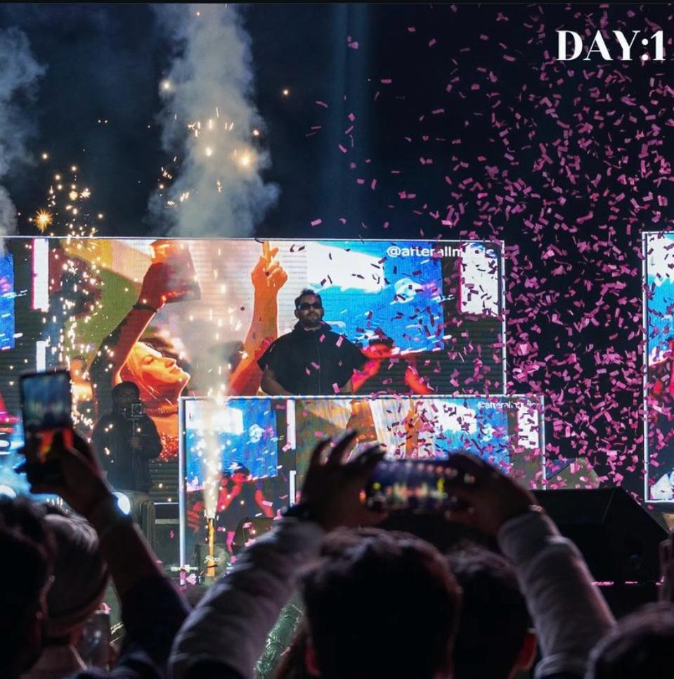
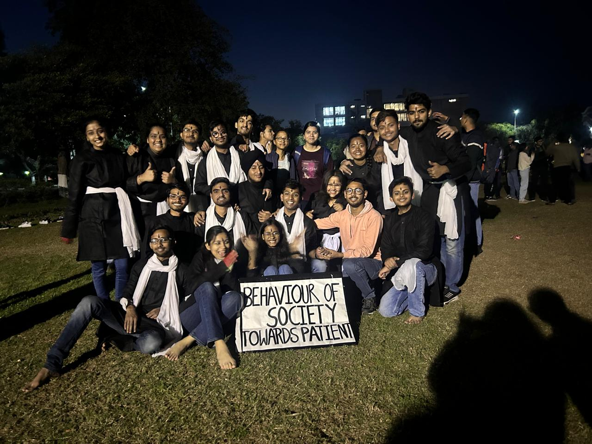

UTKANSH
The annual cultural fest “UTKANSH”, which attracts thousands of students across the country to participate in the days of extravaganza comprising of competitions, seminars, symposium and workshops. Since its inception in 2006, this festival has been identified as a convergence of cultures and a confluence of best talents across the country.